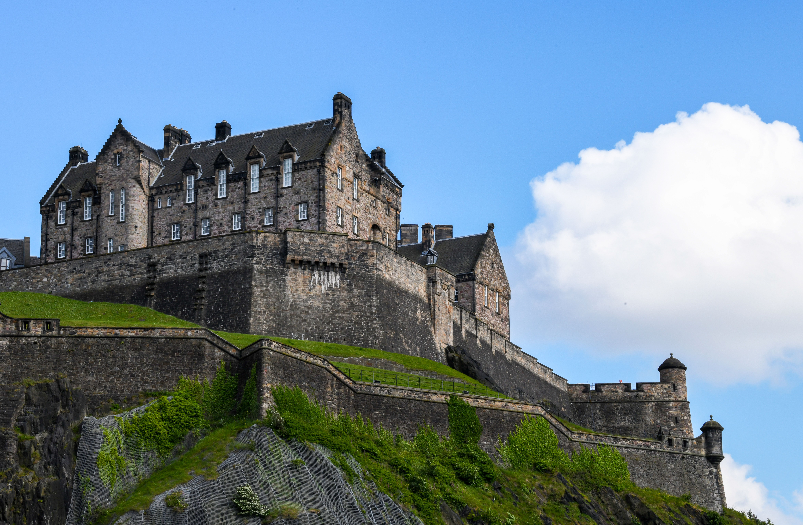
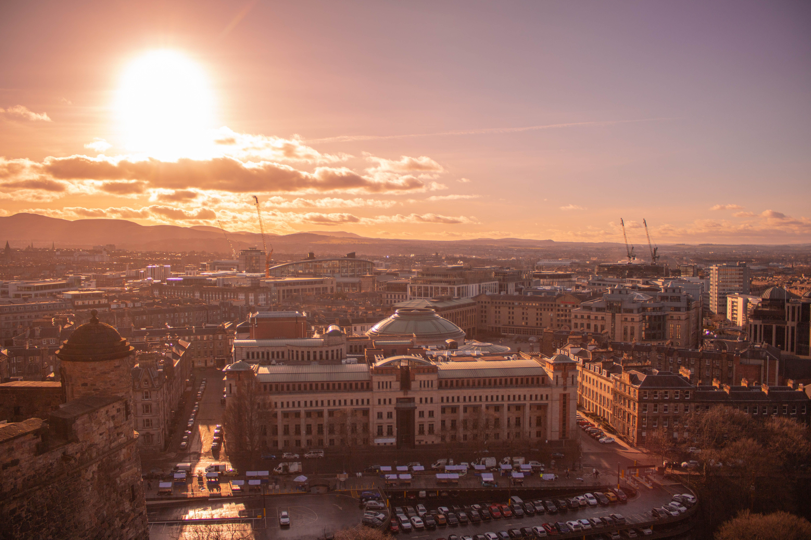
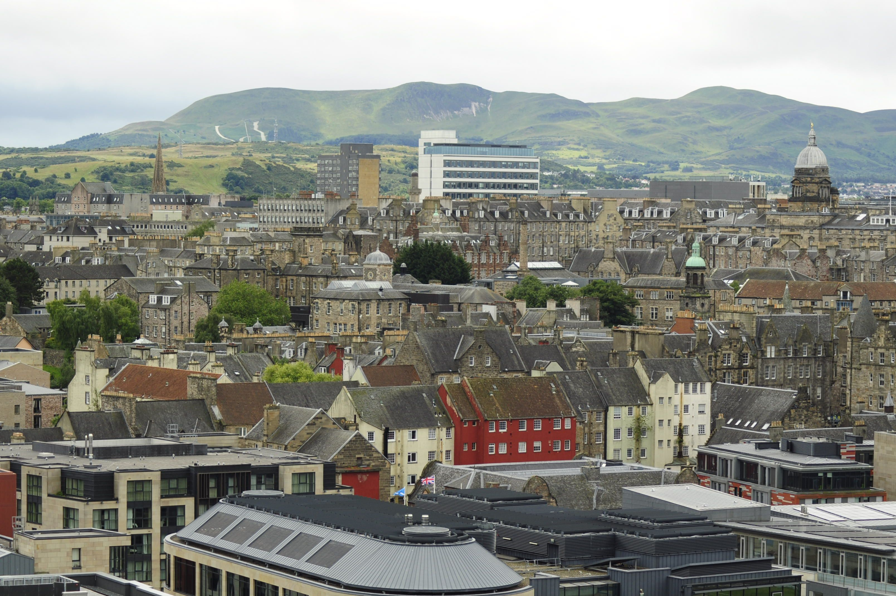
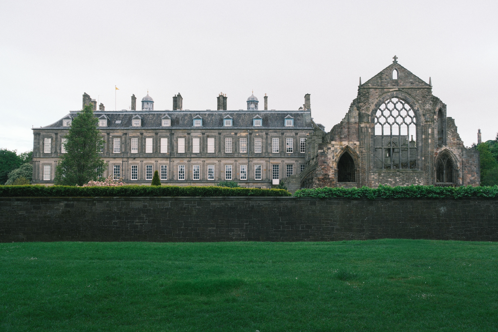
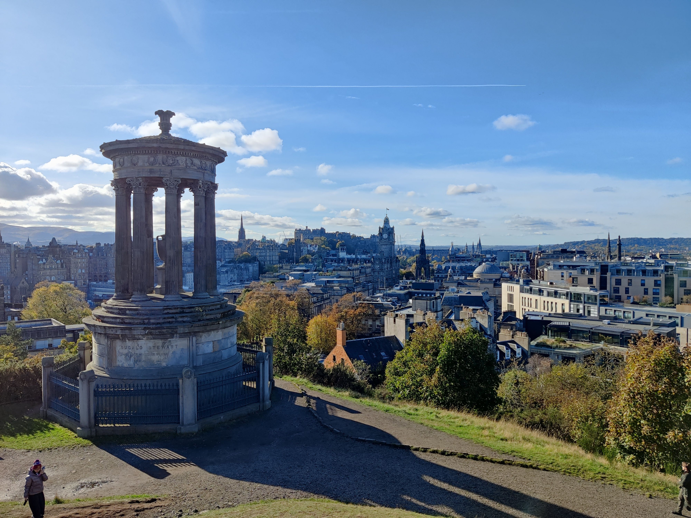
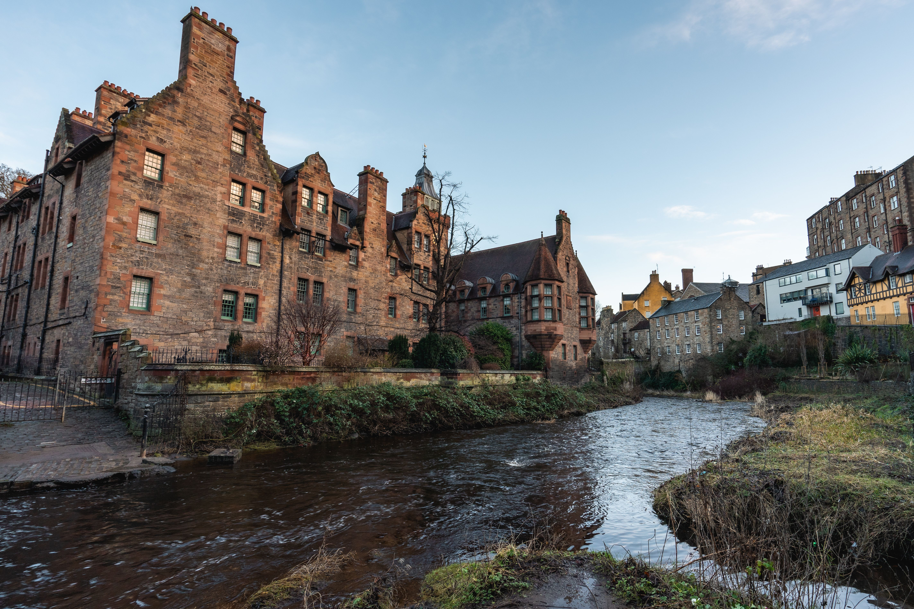

01
LANDMARK
Edinburgh Castle
Discover Scotland's iconic castle perched dramatically above the historic city centre.
Explore PlaceDiscover Scotland's captivating capital, from the dramatic Edinburgh Castle and historic Royal Mile to charming streets, rich culture and unforgettable Scottish experiences.
Edinburgh is a city where centuries of Scottish history meet vibrant modern culture. Its dramatic skyline, medieval Old Town and elegant Georgian New Town create an atmosphere unlike anywhere else in the UK.
From exploring Edinburgh Castle and walking along the Royal Mile to discovering cosy cafés, whisky bars and beautiful gardens, the Scottish capital offers something for every kind of traveller.
Explore Edinburgh's historic landmarks, dramatic viewpoints and charming neighbourhoods.

01Discover Scotland's iconic castle perched dramatically above the historic city centre.
Explore Place
02Walk through Edinburgh's historic heart, filled with architecture, shops, restaurants and hidden closes.
Explore Place
03Climb this ancient volcanic peak for spectacular panoramic views across Edinburgh.
Explore Place
04Explore the King's official Scottish residence at the foot of the Royal Mile.
Explore Place
05Enjoy one of Edinburgh's most famous viewpoints, especially beautiful around sunrise and sunset.
Explore Place
06Escape the busy city centre and discover this peaceful historic village beside the Water of Leith.
Explore PlaceDiscover the experiences that make Edinburgh one of Scotland's most memorable cities.
Discover Scotland's famous whisky tradition through tastings, distillery experiences and historic whisky bars.
01Wander through medieval streets, hidden closes and atmospheric lanes around the historic Royal Mile.
02Experience Edinburgh's vibrant theatres, galleries, museums and world-famous festivals.
03Take a rewarding walk to one of Edinburgh's most famous viewpoints for incredible city panoramas.
04Try Scottish favourites, modern cuisine, cosy cafés and welcoming restaurants throughout the city.
05Browse independent boutiques, Scottish crafts, souvenirs and stylish shops along Edinburgh's streets.
06Edinburgh's compact city centre makes it easy to explore many major attractions on foot, while buses and trams connect you to areas further away.
Choose the transport option that works best for your itinerary and enjoy discovering Scotland's historic capital at your own pace.
Edinburgh's Old Town and New Town are very walkable, so comfortable shoes are essential for exploring the city's historic streets.
Edinburgh has something special to offer throughout the year. Choose the season that suits your travel style.
Fresh greenery, pleasant walks and fewer crowds make spring a lovely time to explore the city.
Longer days, lively outdoor events and Edinburgh's famous festival season create an energetic atmosphere.
MOST POPULARGolden colours, cooler weather and a calmer atmosphere make autumn perfect for city walks and sightseeing.
Enjoy festive markets, cosy cafés and Edinburgh's atmospheric streets during the colder months.
A few simple tips to help you enjoy Edinburgh comfortably and make the most of your trip.
Plan your Edinburgh itinerary in advance, especially during festival season when popular attractions and accommodation can get busy.
Reserve tickets for major attractions such as Edinburgh Castle and the Palace of Holyroodhouse ahead of time when possible.
Edinburgh’s buses and trams make it easy to travel efficiently around the city and reach places beyond the central areas.
Wear comfortable shoes because Edinburgh is best explored on foot and many historic streets include steep hills and cobbled paths.
Edinburgh weather can change quickly, so carry a light waterproof layer and check the forecast before heading out.
Take time to explore neighbourhoods outside the main tourist areas for local cafés, independent shops and a quieter side of Edinburgh.
Helpful answers to common questions before planning your Edinburgh adventure.
Three to four days is a great starting point for exploring Edinburgh's major landmarks, historic streets, viewpoints and local food scene.
Summer offers long daylight hours and a lively festival atmosphere, while spring and autumn can be ideal for a quieter city experience.
Yes. Many of Edinburgh's main attractions are within walking distance, although some streets are steep and cobbled, so comfortable shoes are recommended.
Edinburgh can suit different budgets. You can reduce costs by choosing accommodation outside the busiest central areas and combining paid attractions with free walks and viewpoints.
Pack comfortable walking shoes and layers. A lightweight waterproof jacket is useful because weather conditions can change quickly.
Absolutely. The city centre is highly walkable, while local buses and trams make it easy to travel further around Edinburgh.
From ancient castles and historic streets to spectacular viewpoints, Scottish culture and unforgettable experiences, Edinburgh is waiting to be discovered.